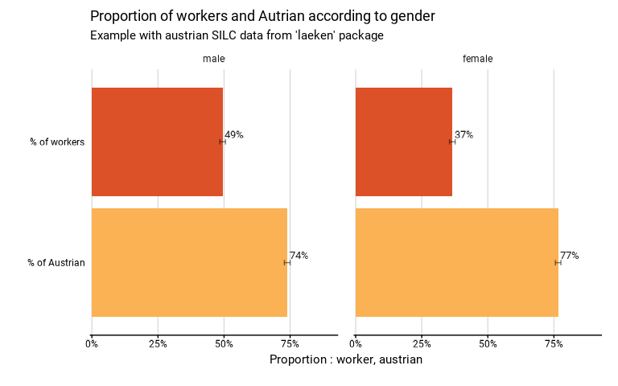

Function to compute de proportions of a set of several binary variables. It can use complex survey data. It produces a table and a graphic.
Usage
many_val(
data,
list_vars,
type,
list_vars_lab = NULL,
facet = NULL,
filter_exp = NULL,
...,
na.rm.facet = T,
na.vars = "rm",
prop_method = "beta",
reorder = FALSE,
show_ci = T,
show_n = FALSE,
show_value = TRUE,
show_labs = TRUE,
scale = NULL,
digits = 0,
unit = NULL,
dec = ",",
pal = "Egypt",
direction = 1,
desaturate = 0,
lighten = 0,
darken = 0,
dodge = 0.9,
font = "Roboto",
wrap_width_y = 25,
title = NULL,
subtitle = NULL,
xlab = NULL,
ylab = NULL,
lang = "fr",
caption = NULL,
theme = NULL,
export_path = NULL
)
many_prop(..., type = "prop")
many_median(..., type = "median")
many_mean(..., type = "mean")Arguments
- data
A dataframe or an object from the survey package or an object from the srvyr package.
- list_vars
A vector containing names of the dummy variables on which to compute the proportions
- type
"mean" to compute means ; "median" to compute medians ; "prop" to compute proportions.
- list_vars_lab
Names of the variables
- facet
A variable defining the faceting group.
- filter_exp
An expression that filters the data, preserving the design.
- ...
All options possible in as_survey_design in srvyr package.
- na.rm.facet
TRUE if you want to remove observations with NA on the group variable or NA on the facet variable. FALSE if you want to create a group with the NA value for the group variable and a facet with the NA value for the facet variable. NA in the variables included in prop_exp are not affected in this argument. All the observation with a NA in the variables included in prop_exp are excluded.
- na.vars
The treatment of NA values in variables. "rm" removes NA only in each individual variable, "rm.all" removes every individual that has at least one NA in one variable.
- prop_method
Type of proportion method to use. See svyciprop in survey package for details. Default is the beta method.
- reorder
TRUE if you want to reorder the variables according to the proportion.
- show_ci
TRUE if you want to show the error bars on the graphic. FALSE if you do not want to show the error bars.
- show_n
TRUE if you want to show on the graphic the number of individuals in the sample in each group. FALSE if you do not want to show this number. Default is FALSE.
- show_value
TRUE if you want to show the proportion in each group on the graphic. FALSE if you do not want to show the proportion.
- show_labs
TRUE if you want to show axes, titles and caption labels. FALSE if you do not want to show any label on axes and titles. Default is TRUE.
- scale
Denominator of the proportion. Default is 100 to interprets numbers as percentages.
- digits
Numbers of digits showed on the values labels on the graphic. Default is 0.
- unit
Unit showed in the graphic. Default is percent.
- dec
Decimal mark shown on the graphic. Default is ","
- pal
Color palette used on the graphic. The palettes from the packages MetBrewer, MoMAColors and PrettyCols are available.
- direction
Direction of the palette color. Default is 1. The opposite direction is -1.
- desaturate
Numeric specifying the amount of desaturation where 1 corresponds to complete desaturation, 0 to no desaturation, and values in between to partial desaturation.
- lighten
Numeric specifying the amount of lightening. Negative numbers cause darkening.
- darken
Numeric specifying the amount of lightening. Negative numbers cause lightening.
- dodge
Width of the bar, between 0 and 1.
- font
Font used in the graphic. See load_and_active_fonts() for available fonts.
- wrap_width_y
Number of characters before going to the line. Applies to the labels of the groups. Default is 25.
- title
Title of the graphic.
- subtitle
Subtitle of the graphic.
- xlab
X label on the graphic. As coord_flip() is used in the graphic, xlab refers to the x label on the graphic, after the coord_flip(), and not to the x variable in the data.
- ylab
Y label on the graphic. As coord_flip() is used in the graphic, xlab refers to the x label on the graphic, after the coord_flip(), and not to the x variable in the data.
- lang
The language of the indications on the chart. Possibilities: "fr", "nl", "en". Default is "fr".
- caption
Caption of the graphic.
- theme
Theme od te graphic. IWEPS adds y axis lines and ticks.
- export_path
Path to export the results in an xlsx file. The file includes two sheets : the table and the graphic.
Examples
# Loading of data
data(eusilc, package = "laeken")
# Recoding variables
eusilc$worker <- 0
eusilc$worker[eusilc$pl030 == "1"]<-1
eusilc$worker[eusilc$pl030 == "2"]<-1
eusilc$austrian<-0
eusilc$austrian[eusilc$pb220a == "AT"]<-1
# Computation, taking sample design into account
eusilc_many_prop <- many_prop(
eusilc,
list_vars = c(worker,austrian),
list_vars_lab = c("% of workers","% of Austrian"),
facet = rb090,
strata = db040,
ids = db030,
weight = rb050,
title = "Proportion of workers and Autrian according to gender",
subtitle = "Example with austrian SILC data from 'laeken' package"
)
#> Variable(s) entrees : worker, austrian
#> Input: data.frame
#> Sampling design -> ids: db030, strata: db040, weights: rb050
# Results in graph form
eusilc_many_prop$graph

# Results in table format
eusilc_many_prop$tab
#> # A tibble: 4 × 12
#> rb090 list_col prop prop_low prop_upp n_sample n_true_weighted
#> <fct> <fct> <dbl> <dbl> <dbl> <int> <dbl>
#> 1 male % of workers 0.495 0.484 0.506 7267 1969092.
#> 2 female % of workers 0.366 0.355 0.376 7560 1536897.
#> 3 male % of Austrian 0.739 0.728 0.750 7267 2942211.
#> 4 female % of Austrian 0.766 0.756 0.777 7560 3219916.
#> # ℹ 5 more variables: n_true_weighted_low <dbl>, n_true_weighted_upp <dbl>,
#> # n_tot_weighted <dbl>, n_tot_weighted_low <dbl>, n_tot_weighted_upp <dbl>